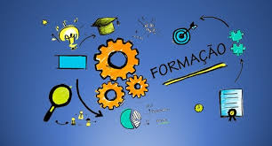

Um pouco sobre mim
Sou mãe de 3 filhos maravilhosos. Sou casada. Uma profissional dedicada. Uma pessoa próativa, que gosta de inovar e usar recursos tecnológicos, dedicada e que busca por boas oportunidades de melhorar, a mim mesma e ao ambiente ao meu redor. Gosto muito de fazer trabalhos voluntários e desenvolver projetos que possam apoiar a comunidade, principalmente pessoas mais vulneráveis que precisam de melhores oportunidades.
Tenho 39 anos. Como profissional tenho tentado trilhar o caminho de profissionais que buscam cada vez mais oferecer o melhor e com maior qualidade. Gosto de estudar. Faço muitos cursos. Sou mais focada em cursos e qualificações nas áreas de: Educação Inclusiva; Acessibilidade; Tecnologia; Projetos Sociais, e; Meio Ambiente.

FORMAÇÃO
Graduação em Tecnologia em Gestão Ambiental;
Graduação em Licenciatura em Letras;
Especialização em Tradução e Interpretação de Libras;
Mestrado em Estudos Linguísticos - UFU;
Doutorado em Estudos Linguísticos - UFU.
Acesse os comprovantes!

EXPERIÊNCIA
Professora do Magistério Superior (Libras e afins) / UFTM - 2023 - atual;
Tarutora e Intérprete de Libras / UFTM - 2010 a 2023;
Chefe do Setor de Acessibilidade / UFTM - 2014 a 2020;
Professora de Educação Ambiental / Colégio Fernando Pessoa - 2002 a 2006.
Acesse os comprovantes!
SOFT SKILLS
Criatividade e Inovação, sempre buscando novas soluções;
Trabalha bem em equipe e com desenvolvimento de projetos;
Comunicativa, não tem problemas em falar em público, já fez várias palestras para grande público;
Gosta de navegar em várias áreas e trabalhar com multi e interdisciplinaridade.
Acesse cursos realizados!
Cargos e Salários Pretendidos
Especialista em ESG
Hoje eu busco por um cargo que possa consiliar minhas especialidades e possa contribuir socialmente, como o cargo de Especialista em ESG - um profissional que atua com sustentabilidade e responsabilidade social, acessibilidade e inclusão em ambientes empresariais.
Analista de Acessibilidade e Inclusão
Também considero possibilidade de trabalhar como Analista de Acessibilidade e Inclusão, atuando com estratégias, metodos e ações que possibilitem tornar a empresa mais inclusiva e receptiva às pessoas com deficiência no ambiente de trabalho, além de atuar em formações e capacitações de funcionários nessas áreas e outras afins: Braille, Libras, Tecnologias Assistivas.
Salário Pretendido
Busco um salário entre R$ 25.000,00 a R$ 20.000,00
É importante destacar que me interesso em realizar um contrato de trabalho de pelo menos 5 anos com a empresa, uma vez que a atuação em áreas sensíveis como sustentabilidade, acessibilidade e inclusão são áreas que precisam de garantias de um trabalho contínuo e dedicado.
Hoje tenho o aceite de um professor da USP para ingressar no programa de Pós-Doutorado naquela instituição, com uma proposta de pesquisa que une acessibilidade, tecnologia, questões sociais e sustentabilidade.